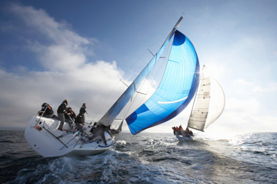

The Lower Mainland Yacht Cooperative (LMYC) is a provincially registered and regulated non-profit organization, which is owned and operated by its members. LMYC is governed by the British Columbia Co-operative Act.
The mission and purpose of the Lower Mainland Yacht co-op is to promote Affordable, Safe and Enjoyable recreational sailing.
As a co-op, it is possible to provide boats, equipment and sailing skill development at a fraction of the cost of any other sailing program you can find. The low cost, however, does require full participation of the members to make it succeed. All members are expected to contribute time for boat maintenance or helping with other activities toward our common goal.
To maintain our co-op interest and it's continuing success, an annual election is held in February to select the Commodore, First and Second Vice Commodores, Treasurer and Secretary.
Meetings are held on the third Thursday of each month, except July, August and December. Meetings are held at the Rotary Field House in White Rock at 1930 hours. Annual dues are payable by February 1st each year. The Annual General Meeting is held at the February meeting.